Fit a Neural Field
to a 2D Image
Before tackling 3D, we start with a simpler task: training an MLP to memorize a single image by mapping pixel coordinates (u, v) → (r, g, b). Sinusoidal positional encoding lets the network represent high-frequency details like fine textures and sharp edges.
| Parameter | Value | Notes |
|---|---|---|
| Positional Encoding levels L | 10 | Maps 2D coord → 42-dim vector |
| Input dimension (after PE) | 42 | 2 + 2 × 2 × 10 = 42 |
| Hidden layers | 4 | Linear → ReLU stack |
| Hidden width | 256 | Each layer has 256 neurons |
| Output activation | Sigmoid | Constrains output to [0, 1] |
| Loss function | MSE | Mean Squared Error on normalized RGB |
| Optimizer | Adam | lr = 1e-2 |
| Batch size | 10,000 pixels | Randomly sampled per iteration |
| Training iterations | 2,000 | Main run; grid uses 1,000 |
| Final PSNR (fox) | ~28 dB | Well above perceptual quality threshold |
From noise to image
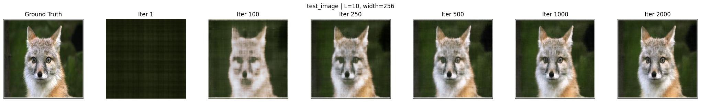
Ground truth → Iter 1 → 100 → 250 → 500 → 1000 → 2000 | L=10, width=256, lr=1e-2
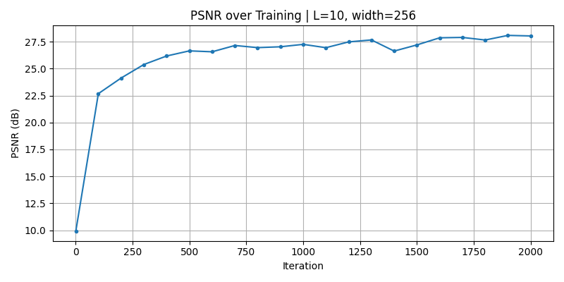
PSNR curve — fox image (2000 iters)
The network starts from a near-black output at iter 1. By iter 100 the low-frequency structure (shape, rough color) emerges. Fine details like fur texture and eye reflections appear around iter 500, with further refinement through 2000 iterations.
The characteristic checkerboard artifact visible at iter 100 arises from random pixel sampling and the network fills in the sampled pixels first before interpolating the rest.

Ground truth → Iter 1 → 100 → 250 → 500 → 1000 → 2000 | L=10, width=256

PSNR curve — cat image (2000 iters)
2×2 Ablation Grid
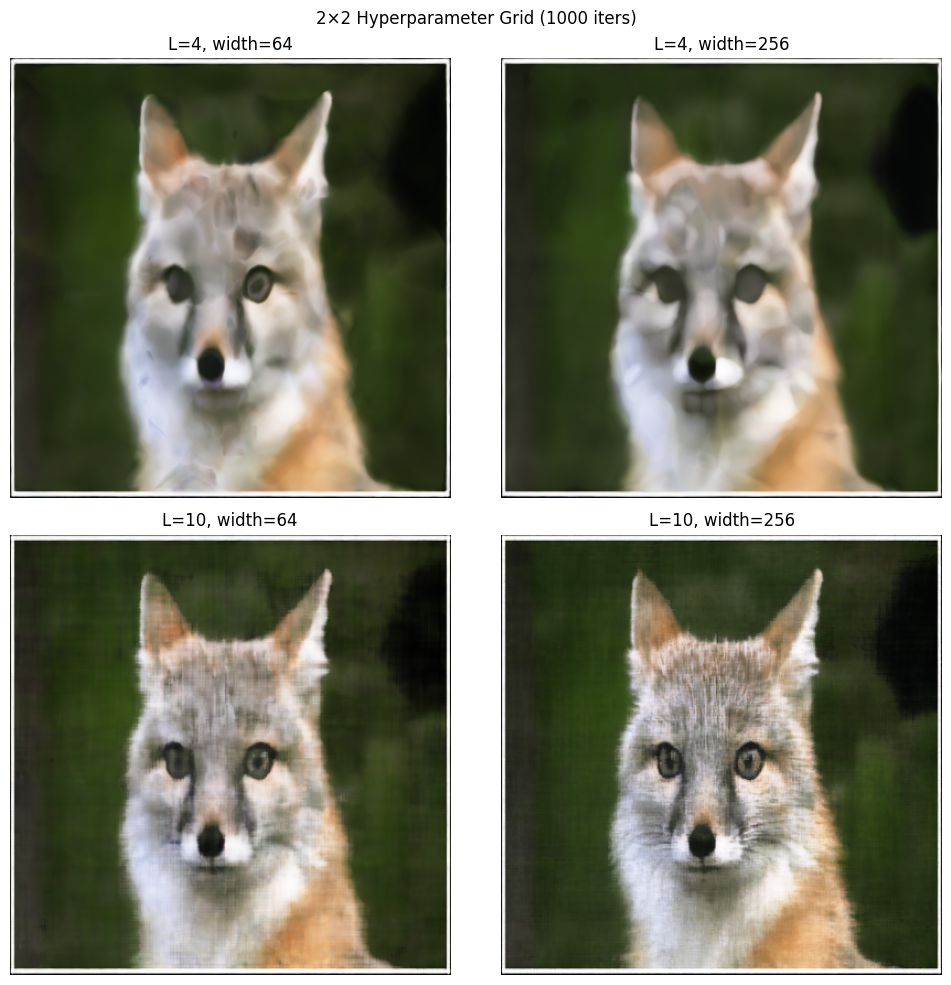
2×2 grid: L ∈ {4, 10} × width ∈ {64, 256} | 1000 iterations
Effect of Positional Encoding (L)
L=4 caps at ~25 dB regardless of width. The encoding lacks high-frequency basis functions, so fine details like fur texture are fundamentally unrepresentable and the results are blurry regardless of network capacity. L=10 reaches ~26–28 dB with sharper reconstruction.
Effect of Width
Width affects model capacity. Going from width=64 → 256 at L=10 gives ~2 dB gain (26 → 28 dB). At L=4 the width barely matters and the bottleneck is the encoding, not the network size. Both L and width matter, but L matters more.
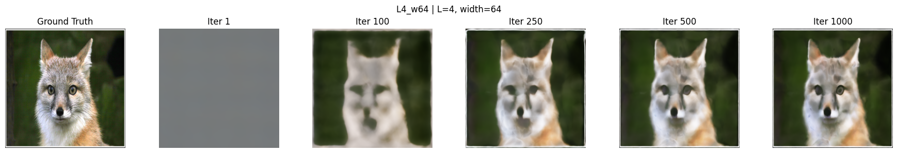
L=4, width=64 — ~25 dB
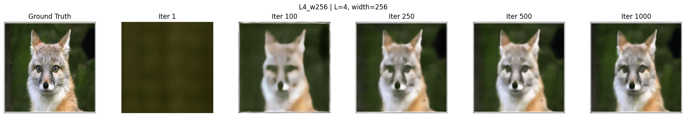
L=4, width=256 — ~25 dB
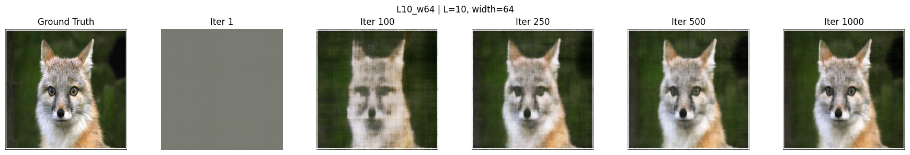
L=10, width=64 — ~26 dB
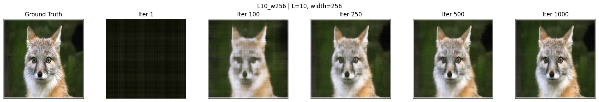
L=10, width=256 — ~28 dB ✦ best
Neural Radiance Field
from Multi-view Images
We extend the 2D neural field to a full 3D NeRF, trained on 100 multi-view images of the Lego bulldozer scene. A deeper MLP maps (x, y, z, dx, dy, dz) → (r, g, b, σ), and volume rendering composites these predictions into final pixel colors.
For every pixel (u+0.5, v+0.5) in each training image, we compute a ray
origin r_o = c2w[:3,3] and direction
r_d = normalize(R @ K⁻¹ @ [u,v,1]).
All rays across all 100 images are precomputed and stored as
(N×H×W, 3) tensors.
Each ray is discretized into n_samples=64 points between
near=2.0 and far=6.0. During training, random
jitter within each depth interval prevents the network from overfitting
to a fixed discrete sample grid.
An 8-layer MLP with a skip connection at layer 5. Input: 3D coords encoded with L=10 (63-dim) + view direction encoded with L=4 (27-dim). Output: density σ (ReLU ≥ 0) and color RGB (Sigmoid ∈ [0,1]). The view-direction conditioning allows the network to represent view-dependent effects like specular highlights.
The discrete volume rendering equation composites point colors weighted
by transmittance T_i and opacity α_i = 1 - exp(-σ_i·δ_i).
Training: Adam optimizer, lr=5e-4, batch of 10K rays/step.
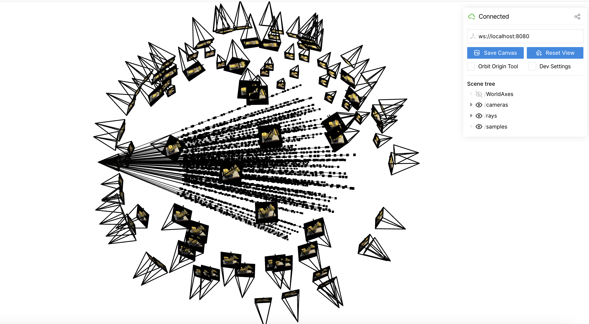
100 training cameras (frustum thumbnails) arranged in a hemisphere · 100 rays from one camera (black lines) · sample points along each ray (dots)
image_to_rays() implementation
correctly computes ray directions via K⁻¹ unprojection and
c2w rotation. Sample points are uniformly distributed between
near=2.0 and far=6.0.
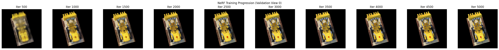
Validation view rendered every 500 iterations · 5000 total gradient steps
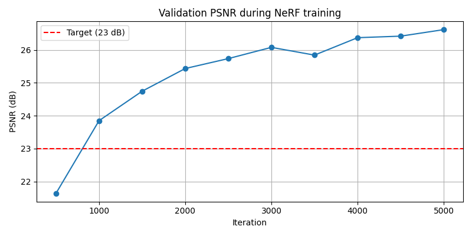
Validation PSNR on 6 held-out views · target 23 dB crossed at ~800 iterations
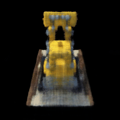
The NeRF is evaluated at 60 cameras arranged in a sphere around the lego
scene (the c2ws_test cameras from the dataset). Each frame
is rendered by casting a full grid of rays and compositing with the
learned density and color fields.
The clean black background and consistent appearance across viewing angles confirm that the model has correctly learned both the geometry (density field) and view-dependent appearance (color field conditioned on ray direction) of the scene.
NeRF on Real-World Data
Next I tried training NeRF on my own object with a smartphone, ran COLMAP to estimate camera poses, and trained the same NeRF pipeline on the resulting dataset. This tests whether the pipeline generalizes beyond synthetic data.
Recorded a ~35 second video (480×848, 30fps) walking a full circle around a textured plush toy, keeping the object centered throughout. First frame taken at eye-level pointing directly at the object.
Used the provided Google Colab notebook to extract ~60 frames from the
video, run COLMAP Structure-from-Motion to estimate camera poses, and
undistort images using cv2.undistort() to match the pinhole
camera model assumed by NeRF.
Center-cropped and resized frames to 200×200. Saved as .npz
with images_train, c2ws_train, and focal.
Auto-split: last 5 images → validation, 60 circular test cameras generated
from average training camera radius.
Used near=2.0, far=6.0 (same as lego — confirmed working
via 100-iter debug run). Real scenes are harder than synthetic; PSNR
plateaus at ~20 dB, which is expected for real-world captures without
careful studio lighting or scene normalization.
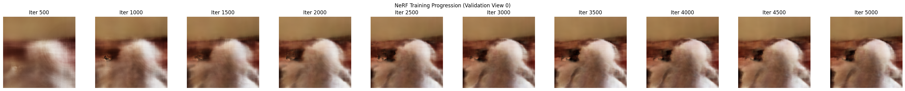
Validation view rendered every 500 iterations · 5000 total gradient steps · near=2.0, far=6.0
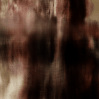
The orbit GIF is rendered using 60 automatically-generated circular test cameras at the average training camera radius (~3.5 units from origin), since the custom dataset has no pre-defined test cameras.
The warm brown/beige background and white object silhouette are clearly visible, confirming the NeRF has learned a plausible 3D density field despite the challenging real-world conditions. Final validation PSNR ~20 dB.